library(arrow) # Data import
library(dplyr) # Data manipulation
library(sf) # Spatial
library(ggplot2) # Data visualization
library(mgcv) # GAM fitting
library(gratia) # GAM visualization
theme_set(theme_minimal())5 Initial striped bass GAM exploration
Let’s take a look at striped bass Morone saxatilis using the data prepared in the data cleaning chapter.
We first visualize the distribution of the median per-individual latitudes through time:
ggplot(sb) +
geom_point(aes(x = wk, y = med_lat, color = pop), alpha = 0.4) +
facet_wrap(~year) +
labs(x = "Week of year", y = "Weekly median latitude") +
theme(axis.title = element_text(size = 12))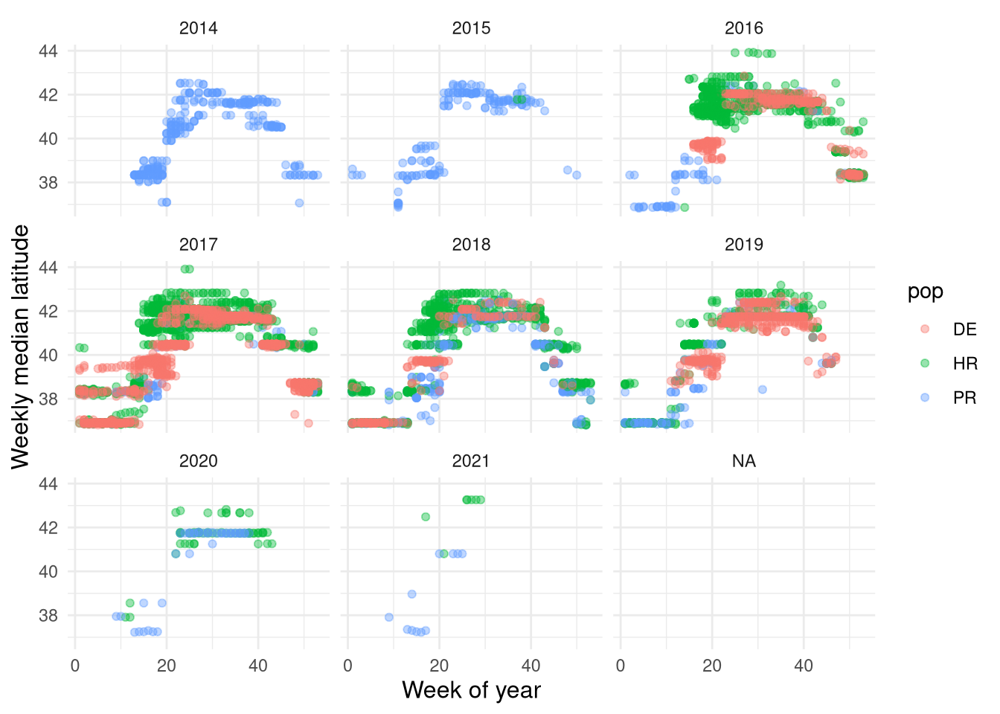
Following our projectiong selection procedure in the Projection Error chapter, we project the data into an azimuthal equidistant projection (AEQD) and rotate the data to “migration north”. To project into AEQD, we first need a projection center. This will be the median receiver location.
# A tibble: 1 × 2
lon0 lat0
<dbl> <dbl>
1 -73.9 40.6Create the PROJ string…
proj_string <- paste0(
"+proj=aeqd +lon_0=",
round(projection_center$lon0, 3),
" +lat_0=",
round(projection_center$lat0, 3)
)
proj_string[1] "+proj=aeqd +lon_0=-73.9 +lat_0=40.601"…and project the fish locations:
sb_sf <- sb |>
st_as_sf(coords = c("med_lon", "med_lat"), crs = 4326, remove = FALSE) |>
st_transform(proj_string)
sb_sf |>
distinct(med_lon, med_lat, .keep_all = TRUE) |>
ggplot() +
geom_sf() +
coord_sf(datum = proj_string)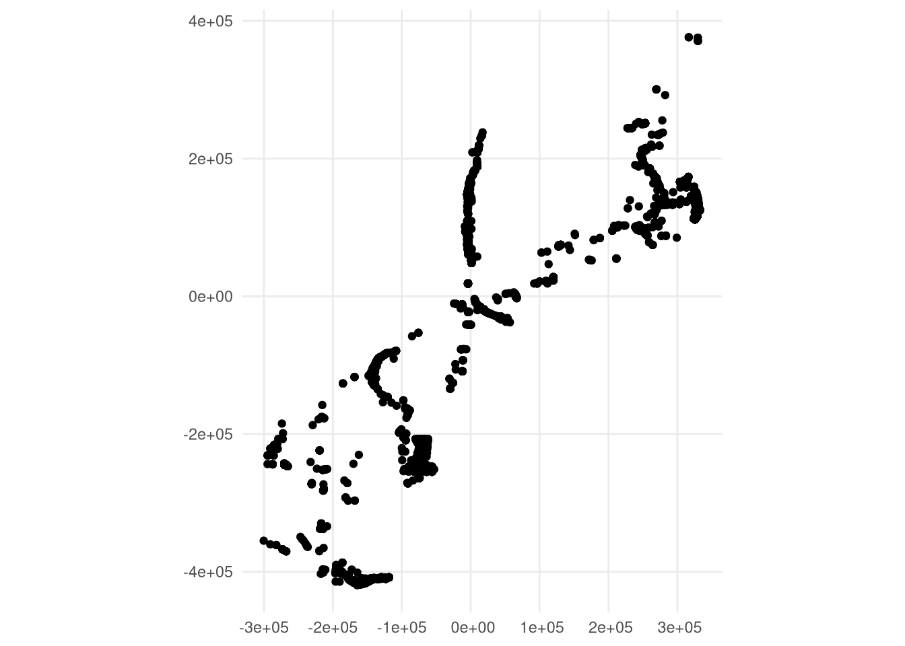
We now conduct principle components analysis (PCA) on the major migration vector to find its angle from true north: the migration azimuth.
migration_azimuth <- sb_sf |>
# Extract AEQD coordinates
st_coordinates() |>
# Run PCA
prcomp() |>
# Extract PCA loadings
_$rotation |>
# Transpose matrix
t() |>
# Find coordinates of a second location on the X axis.
# Here we use 1 km but it could be any value
(\(.) c(1e3, 0) %*% .)() |>
# Find the angle between true north and migration north
(\(.) atan2(.[1], .[2]) * 180 / pi)()
# Measure clockwise from north
migration_azimuth <- ifelse(
migration_azimuth < 0,
180 + migration_azimuth,
migration_azimuth
)So, the migration vector is rotated 43\(\degree\) from north. To rotate the data, we’re going to lie to the program and say that the data are currently projected around the north pole, then add the migration azimuth to it.
st_crs(sb_sf) <- "+proj=aeqd +lat_0=90 +lon_0=0"
proj_rotated <- paste0("+proj=aeqd +lat_0=90 +lon_0=", migration_azimuth)
sb_migration_north <- sb_sf |>
st_transform(proj_rotated) |>
# extract coordinates for modeling purposes
mutate(x = st_coordinates(geometry)[, 1], y = st_coordinates(geometry)[, 2])
# sb_migration_north |>
# as.data.frame() |>
# select(-geometry) |>
# write_parquet(sink = "data/derived/sb_rotated.parquet")
ggplot(sb_migration_north) +
geom_sf() +
coord_sf(datum = proj_rotated)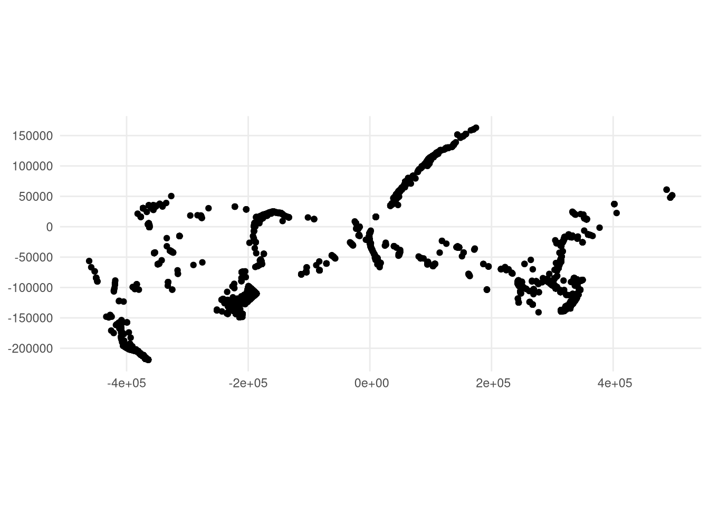
We can now visualize migration synchrony, the variance in the migration vector over time, and migration front, variance in excursion from the migration vector over time (Secor et al. 2025).
ggplot(sb_migration_north) +
geom_point(aes(x = wk, y = x, color = pop), alpha = 0.4) +
facet_wrap(~year) +
labs(
title = "Migration synchrony",
x = "Week of year",
y = "Distance along the migration vector"
) +
theme(axis.title = element_text(size = 12))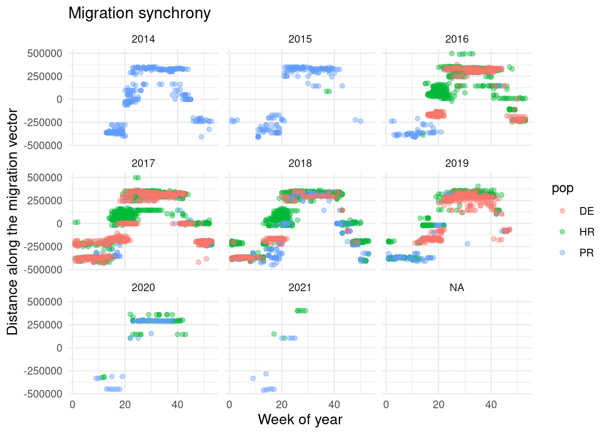
ggplot(sb_migration_north) +
geom_point(aes(x = wk, y = y, color = pop), alpha = 0.4) +
facet_wrap(~year) +
labs(
title = "Migration front",
x = "Week of year",
y = "Distance across the migration vector"
) +
theme(axis.title = element_text(size = 12))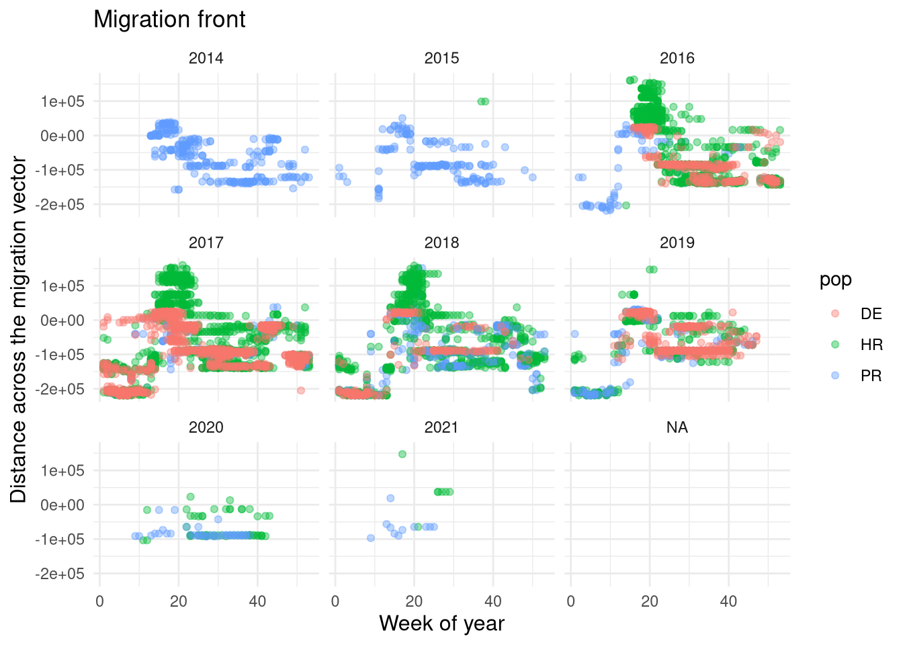
5.1 Initial GAM
5.1.1 Migration vector
For the initial GAM, we’ll treat both year and population as a random effect. We see a general trend of low values on the migration vector through the beginning of the year, a rapid increase after the 10th week, a slight reduction in rate in week 15-20, then another rapid increase through week 25. Posiiton then levels off through week 40, where it rapidly drops.
model_data <- sb_migration_north |>
mutate(pop = factor(pop), yr_f = factor(year), id = factor(transmitter))
m1 <- model_data |>
gam(
x ~ s(wk, k = 27, bs = "cc") +
s(yr_f, bs = "re") +
s(pop, bs = "re") +
s(id, bs = "re"),
knots = list(wk = c(1, 53)),
data = _,
method = "REML"
)
summary(m1)
Family: gaussian
Link function: identity
Formula:
x ~ s(wk, k = 27, bs = "cc") + s(yr_f, bs = "re") + s(pop, bs = "re") +
s(id, bs = "re")
Parametric coefficients:
Estimate Std. Error t value Pr(>|t|)
(Intercept) 8360 31860 0.262 0.793
Approximate significance of smooth terms:
edf Ref.df F p-value
s(wk) 20.698 25 18798.59 < 2e-16 ***
s(yr_f) 5.999 7 92.27 0.00116 **
s(pop) 1.975 2 12761.75 < 2e-16 ***
s(id) 194.523 253 30.36 < 2e-16 ***
---
Signif. codes: 0 '***' 0.001 '**' 0.01 '*' 0.05 '.' 0.1 ' ' 1
R-sq.(adj) = 0.894 Deviance explained = 89.7%
-REML = 95217 Scale est. = 7.3384e+09 n = 7431draw(m1, select = "s(wk)", residuals = TRUE)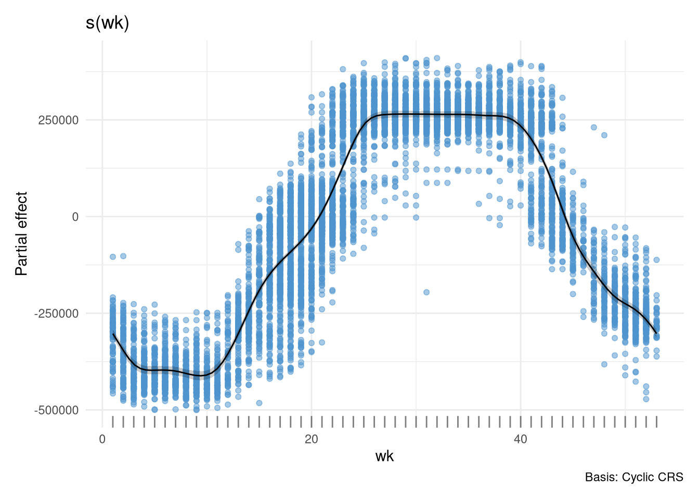
Next we’ll pull the populations apart and treat them as “by-variable smooths” (i.e. one form of a GAM interaction) in the model.
m2 <- bam(
x ~
pop +
s(wk, by = pop, k = 27, bs = "cc") +
s(yr_f, bs = "re") +
s(id, bs = "re"),
knots = list(wk = c(1, 53)),
method = "fREML",
data = model_data
)
summary(m2)
Family: gaussian
Link function: identity
Formula:
x ~ pop + s(wk, by = pop, k = 27, bs = "cc") + s(yr_f, bs = "re") +
s(id, bs = "re")
Parametric coefficients:
Estimate Std. Error t value Pr(>|t|)
(Intercept) 69565 5454 12.76 <2e-16 ***
popPR -98870 8198 -12.06 <2e-16 ***
popDE -69773 5555 -12.56 <2e-16 ***
---
Signif. codes: 0 '***' 0.001 '**' 0.01 '*' 0.05 '.' 0.1 ' ' 1
Approximate significance of smooth terms:
edf Ref.df F p-value
s(wk):popHR 22.53 25 5977.928 <2e-16 ***
s(wk):popPR 19.13 25 1357.840 <2e-16 ***
s(wk):popDE 19.87 25 3103.613 <2e-16 ***
s(yr_f) 5.11 7 36.789 <2e-16 ***
s(id) 199.08 251 6.329 <2e-16 ***
---
Signif. codes: 0 '***' 0.001 '**' 0.01 '*' 0.05 '.' 0.1 ' ' 1
R-sq.(adj) = 0.926 Deviance explained = 92.9%
fREML = 93949 Scale est. = 5.1113e+09 n = 7431draw(
m2,
select = c("s(wk)"),
partial_match = TRUE,
residuals = TRUE,
scales = 'fixed'
)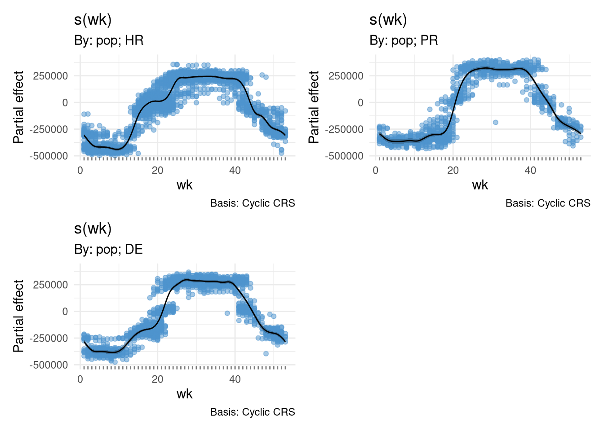
conditional_values(m2, c("wk", "pop"), exclude = c("yr_fac", "id")) |>
draw() +
scale_y_continuous(labels = scales::label_number(scale = 1 / 1000)) +
labs(
x = "Week",
y = "Kilometers along migration vector",
fill = "",
color = ""
) +
theme(
axis.text = element_text(size = 14),
axis.title = element_text(size = 18),
legend.text = element_text(size = 12),
legend.position = "inside",
legend.position.inside = c(0.65, 0.25)
)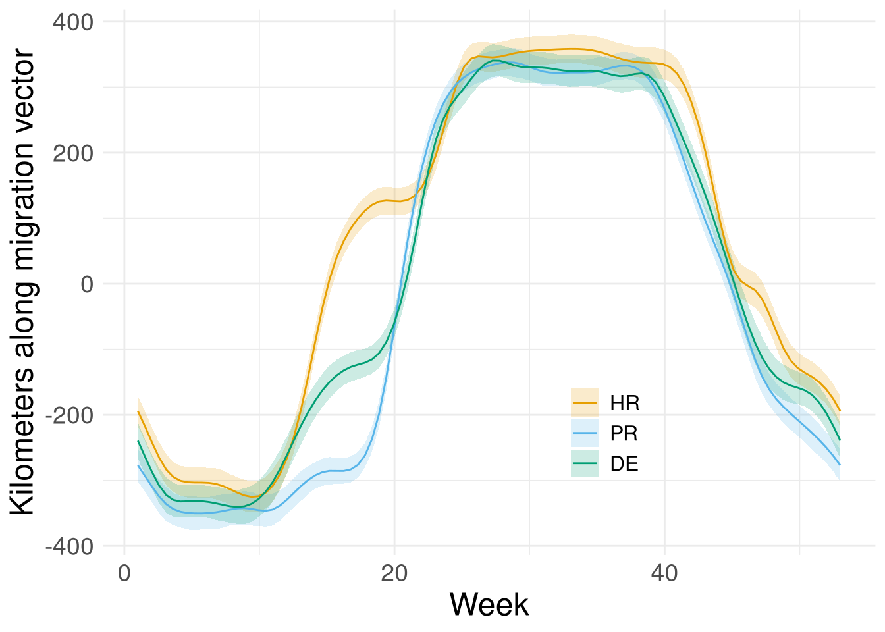
We see that the leveling-off of movement up the migration vector in weeks 15-20 is likely due to spawning. The Potomac River has a leveling-off earlier and lower on the vector, followed by Delaware a little higher and later, then Hudson higher and greater still. These destination habitats are one of the migration metrics we wish to quantify.
What about modeling the shared trend here? One of our underlying hypotheses is that flyways are responding to the same thing: the tilt of the earth’s axis. This would correspond to model GI in Pedersen et al. (2019).
m2_gi <- bam(
x ~
s(wk, bs = "cc", k = 27) +
pop +
s(wk, by = pop, k = 27, bs = "cc") +
s(yr_f, bs = "re") +
s(id, bs = "re"),
knots = list(wk = c(1, 53)),
method = "fREML",
data = model_data
)
draw(
m2_gi,
select = c("s(wk)"),
partial_match = TRUE,
residuals = TRUE,
scales = 'fixed'
)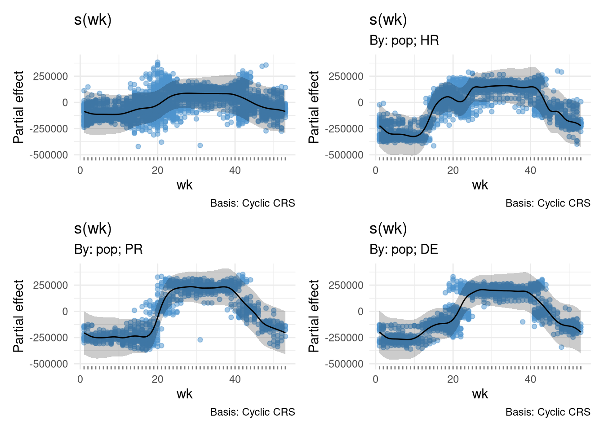
Counter-intuitively, it doesn’t seem like there’s a “significant” trend in week as the 95% CI contains zero throughout the model domain. This may be due to the curves for each population being horizontally shifted with respect to each other and thus “out of phase”, resulting in a mean value near 0 (Wu et al. 2024). In any case, there is no support in modeling the effect of week separately.
5.1.1.1 Difference smooths
Comparing between populations confirms that which we have already seen – Hudson River fish are much higher along the migration vector during spawning periods as compared to Delaware or Potomac fish. Interestingly, there is some evidence that Potomac River fish are ranging farther north than the other two populations.
difference_smooths(m2, select = "s(wk)") |>
draw(scales = "fixed")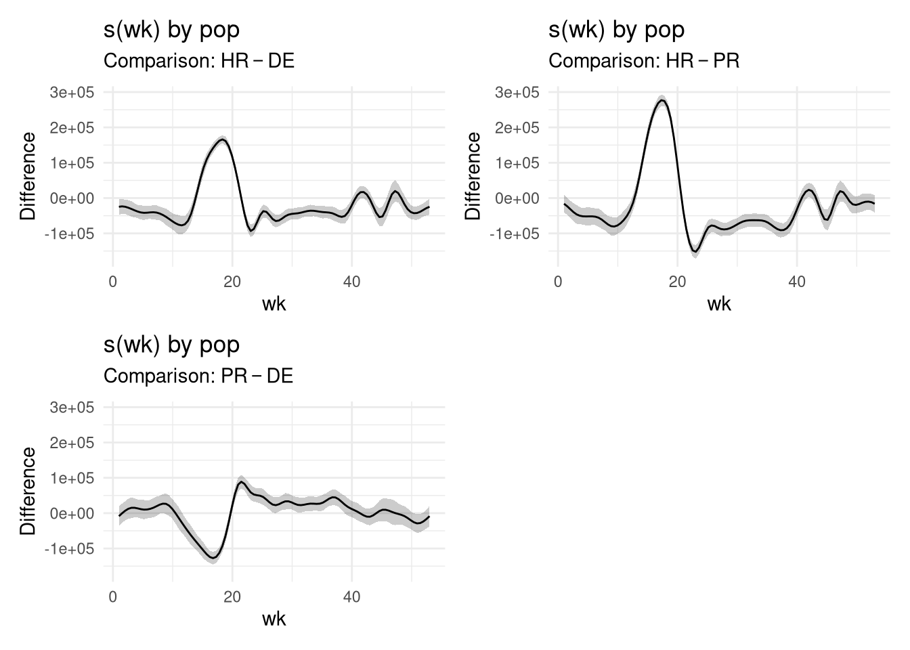
5.1.1.2 Derivatives
m2_d <- derivatives(m2, select = "s(wk):", partial_match = T, n = 52) |>
mutate(
system = case_when(
grepl("HR", .smooth) ~ "Hudson",
grepl("PR", .smooth) ~ "Potomac",
grepl("DE", .smooth) ~ "Delaware"
)
)
draw(m2_d)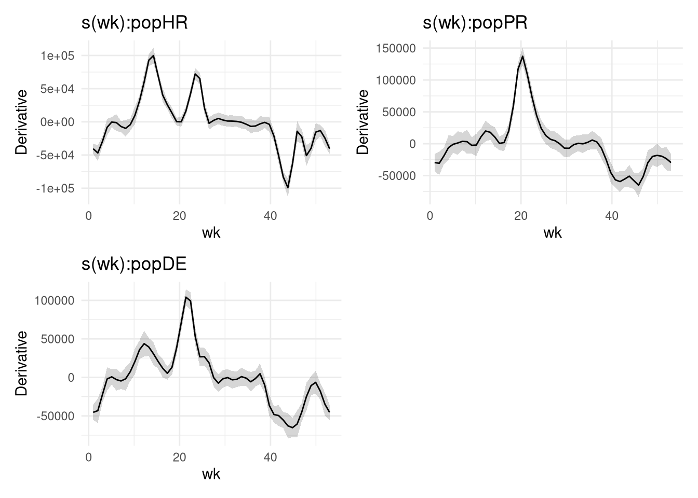
m2_d |>
ggplot() +
geom_ribbon(
aes(
x = wk,
ymin = .lower_ci / 1000,
ymax = .upper_ci / 1000,
fill = system
),
alpha = 0.5
) +
geom_line(aes(x = wk, y = .derivative / 1000, color = system)) +
labs(
x = "Week",
y = "Migration velocity (km/week)",
fill = "System",
color = "System"
) +
theme(
axis.text = element_text(size = 14),
axis.title = element_text(size = 18),
legend.text = element_text(size = 12),
legend.title = element_text(size = 12),
legend.position = "inside",
legend.position.inside = c(0.7, 0.7)
)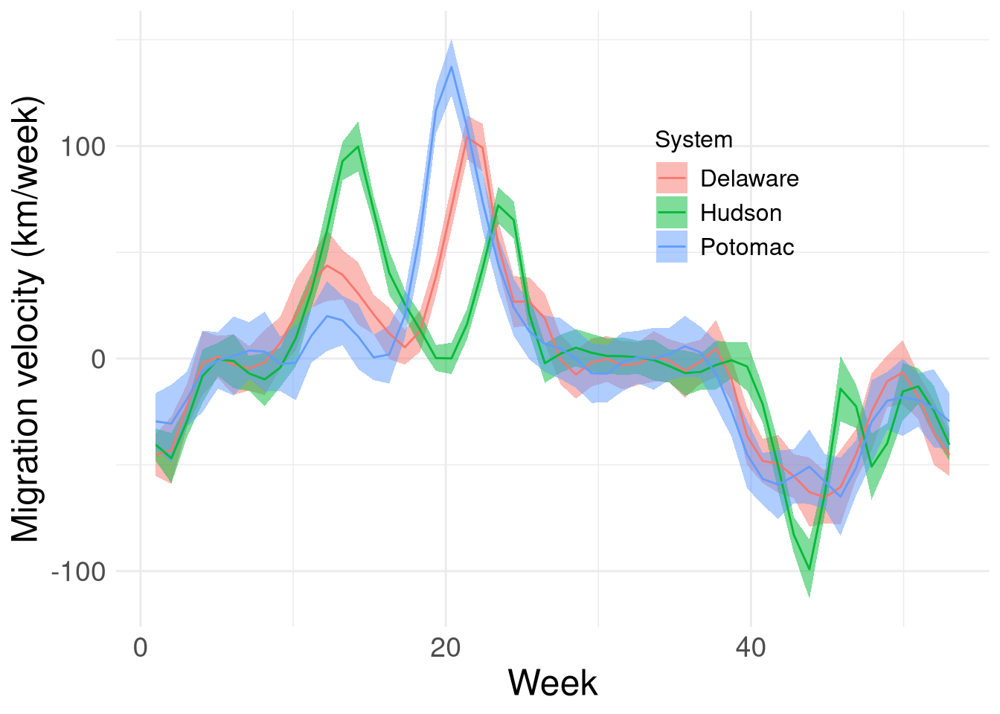
What might a migration metric look like? If we define a “destination habitat” as a time when \(d/d(wk) \approx 0\), here are the locations where Hudson River fish might at their destination habitat:
hr_dest_hab <- m2_d |>
group_by(pop) |>
mutate(
zero = (.lower_ci <= 0 & .upper_ci >= 0),
id = consecutive_id(zero)
) |>
filter(id != 1, pop == "HR") |>
distinct(zero, id, .keep_all = TRUE) |>
mutate(id = rep(1:(n() / 2), each = 2)) |>
tidyr::pivot_wider(id_cols = id, names_from = zero, values_from = wk)
draw(m2_d, select = "s(wk):popHR") +
annotate(
"rect",
xmin = hr_dest_hab$`TRUE`,
xmax = hr_dest_hab$`FALSE`,
ymin = -1e5,
ymax = 1e5,
alpha = 0.2
)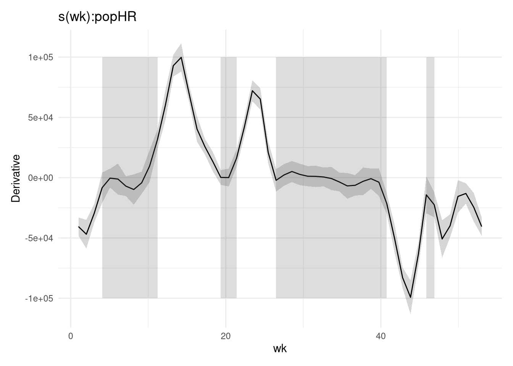
5.1.1.3 Migration front
We’ll do the same with the migration front (the deviation from the migration vector).
m1_mf <- model_data |>
gam(
y ~ s(wk, k = 53, bs = "cc") +
s(yr_f, bs = "re") +
s(pop, bs = "re"),
knots = list(wk = c(1, 53)),
data = _,
method = "REML"
)
summary(m1_mf)
Family: gaussian
Link function: identity
Formula:
y ~ s(wk, k = 53, bs = "cc") + s(yr_f, bs = "re") + s(pop, bs = "re")
Parametric coefficients:
Estimate Std. Error t value Pr(>|t|)
(Intercept) -72156 6320 -11.42 <2e-16 ***
---
Signif. codes: 0 '***' 0.001 '**' 0.01 '*' 0.05 '.' 0.1 ' ' 1
Approximate significance of smooth terms:
edf Ref.df F p-value
s(wk) 33.093 51 453.851 < 2e-16 ***
s(yr_f) 4.196 7 8.518 0.00756 **
s(pop) 1.975 2 172.271 < 2e-16 ***
---
Signif. codes: 0 '***' 0.001 '**' 0.01 '*' 0.05 '.' 0.1 ' ' 1
R-sq.(adj) = 0.722 Deviance explained = 72.3%
-REML = 90614 Scale est. = 2.2479e+09 n = 7431draw(m1_mf, select = "s(wk)", residuals = TRUE)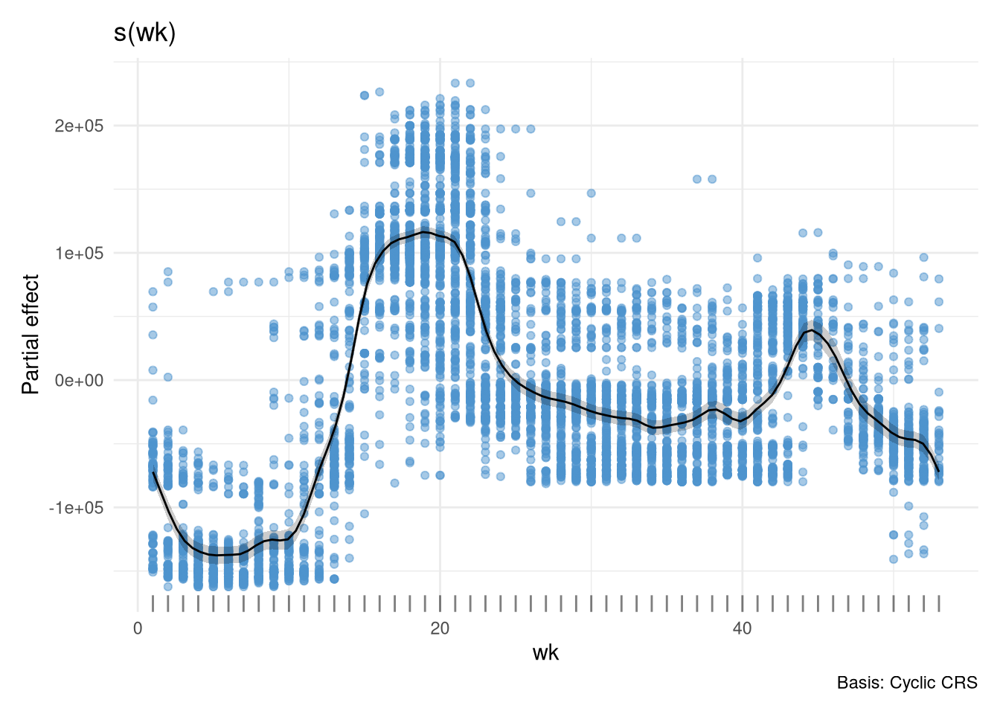
m2_mf <- model_data |>
gam(
y ~ pop +
s(wk, by = pop, k = 53, bs = "cc") +
s(yr_f, bs = "re"),
knots = list(wk = c(1, 53)),
data = _,
method = "REML"
)
summary(m2_mf)
Family: gaussian
Link function: identity
Formula:
y ~ pop + s(wk, by = pop, k = 53, bs = "cc") + s(yr_f, bs = "re")
Parametric coefficients:
Estimate Std. Error t value Pr(>|t|)
(Intercept) -57393 2554 -22.47 <2e-16 ***
popPR -24872 1626 -15.29 <2e-16 ***
popDE -18398 1176 -15.64 <2e-16 ***
---
Signif. codes: 0 '***' 0.001 '**' 0.01 '*' 0.05 '.' 0.1 ' ' 1
Approximate significance of smooth terms:
edf Ref.df F p-value
s(wk):popHR 34.048 51 535.44 <2e-16 ***
s(wk):popPR 19.893 51 49.60 <2e-16 ***
s(wk):popDE 22.237 51 100.04 <2e-16 ***
s(yr_f) 5.518 7 13.63 <2e-16 ***
---
Signif. codes: 0 '***' 0.001 '**' 0.01 '*' 0.05 '.' 0.1 ' ' 1
R-sq.(adj) = 0.783 Deviance explained = 78.6%
-REML = 89740 Scale est. = 1.75e+09 n = 7431draw(m2_mf, select = "s(wk)", partial_match = TRUE, residuals = TRUE)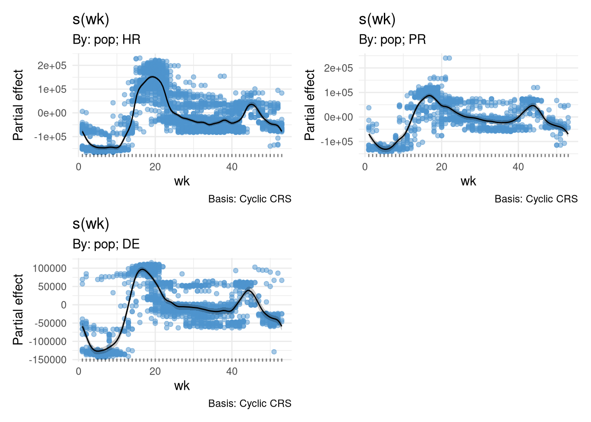
library(marginaleffects)
j <- predictions(
m2_mf,
newdata = datagrid(wk = 1:53, pop = c("HR", "PR", "DE")),
condition = c("wk", "pop"),
exclude = "yr_f"
)
j |>
mutate(
system = case_when(
grepl("HR", pop) ~ "Hudson",
grepl("PR", pop) ~ "Potomac",
grepl("DE", pop) ~ "Delaware"
)
) |>
ggplot() +
geom_ribbon(
aes(x = wk, ymin = conf.low / 1000, ymax = conf.high / 1000),
fill = "gray"
) +
geom_line(aes(x = wk, y = estimate / 1000)) +
labs(x = "Week", y = "Kilometers across migration vector") +
facet_wrap(~system, ncol = 2)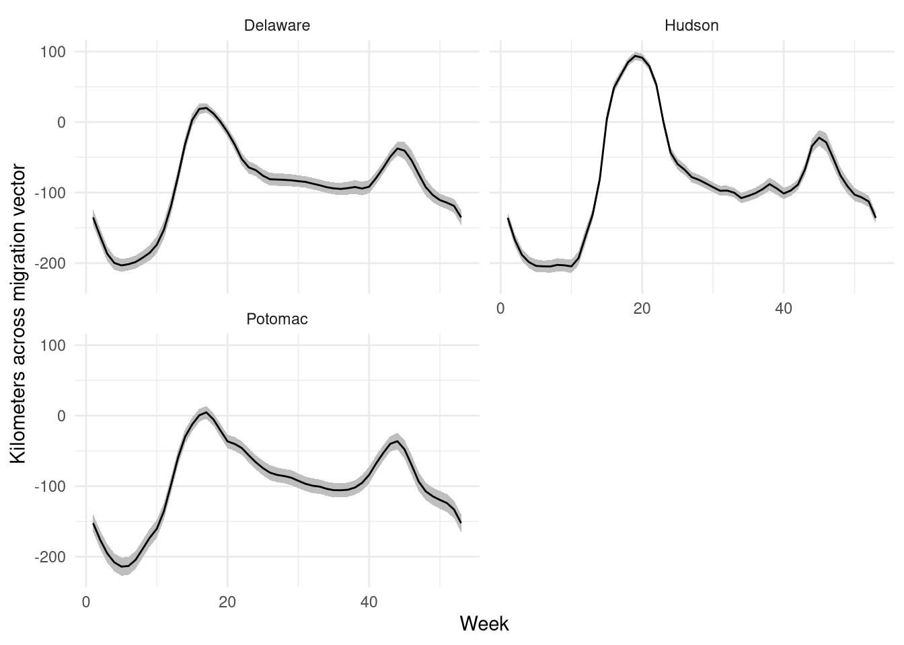
m2f_d <- derivatives(m2_mf, select = "s(wk)", partial_match = T, n = 53)
m2f_d |>
mutate(
system = case_when(
grepl("HR", .smooth) ~ "Hudson",
grepl("PR", .smooth) ~ "Potomac",
grepl("DE", .smooth) ~ "Delaware"
)
) |>
ggplot() +
geom_ribbon(
aes(x = wk, ymin = .lower_ci / 1000, ymax = .upper_ci / 1000),
fill = 'gray'
) +
geom_line(aes(x = wk, y = .derivative / 1000)) +
facet_wrap(~system, nrow = 2) +
labs(x = "Week", y = "Migration front velocity (km/week)")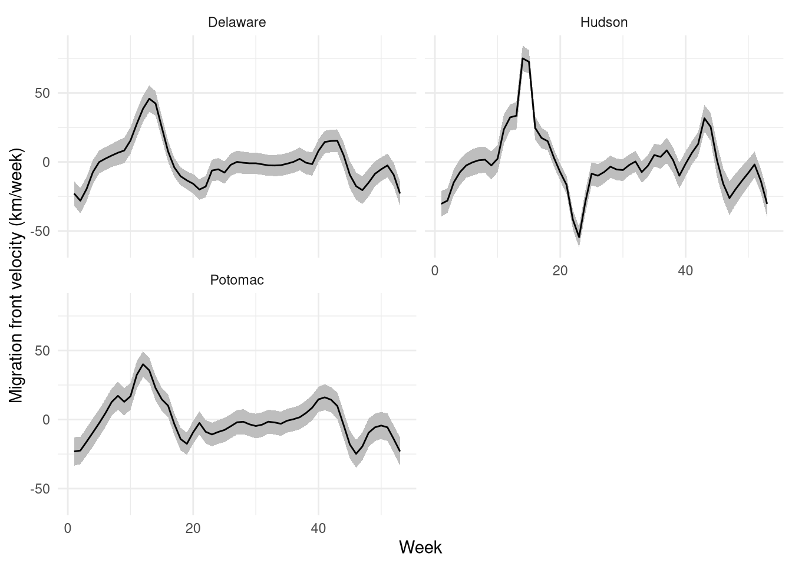
5.1.2 Model evaluation
It should be noted, however, that the initial models are not performing well on the edges of the domain of the migration vector and migration front. This suggests that we need to refine the model to further to characterize these areas.
appraise(m1)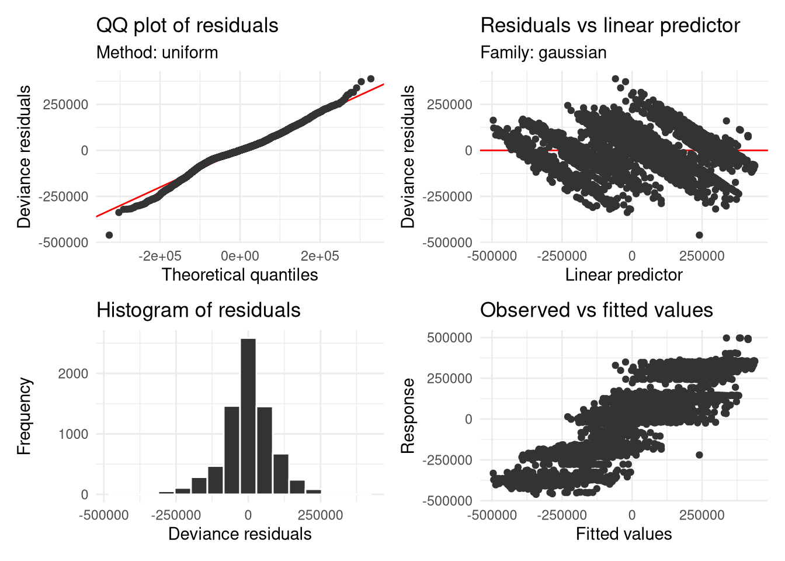
appraise(m2)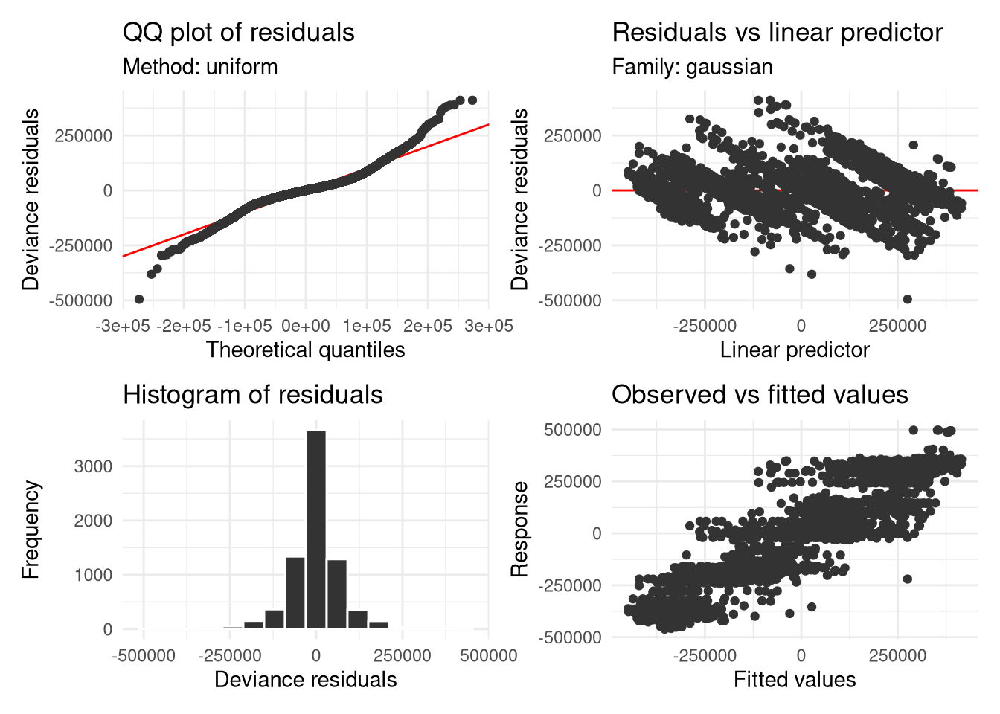
appraise(m1_mf)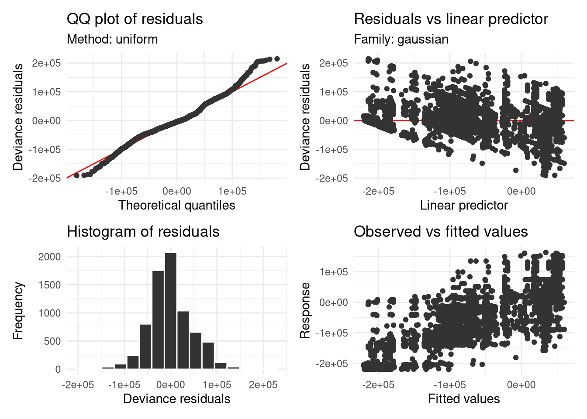
appraise(m2_mf)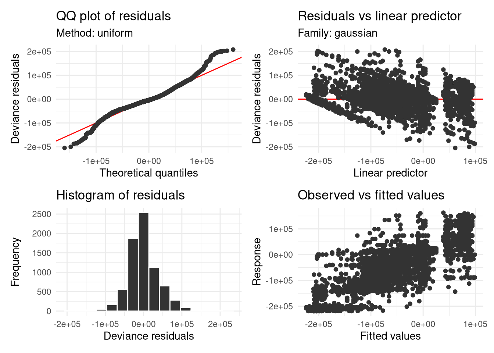